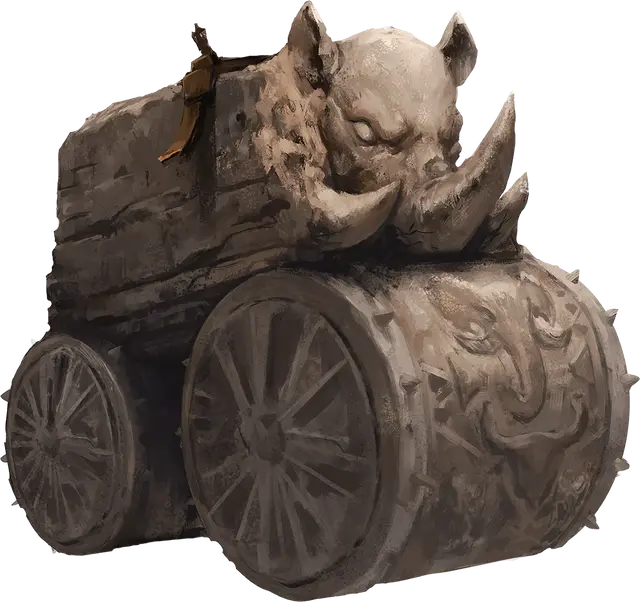

Гранитный джаггернаут
Granite Juggernaut
Большой Конструкт, без мировоззрения

Класс Доспеха 14 (природный доспех)
Хиты 157 (15к10 + 75)
Скорость 30 футов (по прямой линии)
| мод | спас | ||
|---|---|---|---|
| СИЛ | 23 | +6 | +6 |
| ЛОВ | 1 | −5 | −5 |
| ТЕЛ | 20 | +5 | +5 |
| мод | спас | ||
|---|---|---|---|
| ИНТ | 2 | −4 | −4 |
| МДР | 11 | +0 | +0 |
| ХАР | 3 | −4 | −4 |
Иммунитет к урону психическая энергия, яд; дробящий, колющий, рубящий от немагических атак, кроме нанесённых адамантиновым оружием
Иммунитет к состояниям испуг, истощение, окаменение, отравление, очарование, паралич, сбивание с ног
Чувства слепое зрение 120 футов, пассивное Восприятие 10
Опасность 12 (8400 опыта)
Бонус мастерства +4
Особенности
Сопротивление магии. Джаггернаут совершает с преимуществом спасброски от заклинаний и прочих магических эффектов.
Осадный монстр. Джаггернаут наносит двойной урон объектам и постройкам.
Действия
Удар. Рукопашная атака оружием: +10 к попаданию, досягаемость 5 футов, одна цель. Попадание: 11 (1к10 + 6) дробящего урона. Если целью атаки является существо Большого размера или меньше, то оно должно преуспеть в спасброске Силы Сл 18 или будет сбито с ног.
Бонусные действия
Разрушительный перекат. Джаггернаут может перемещаться по пространству упавшего ничком существа. Существо, через чье пространство первый раз за ход проходит джаггернаут, должно совершить спасбросок Ловкости Сл 18, получив 55 (10к10) дробящего урона при провале или половину этого урона при успехе.
Описание
«Если вы находитесь достаточно близко, чтобы увидеть выражение лиц, высеченных на катке гранитного джаггернаута, то вы уже мертвы.»
— Тейторн, авантюрист из Орта.
Гранитный джаггернаут является громоздким Конструктом, которого можно встретить как на полях сражений, так и в коридорах подземелий. Они обладают плотным, коробкоподоным корпусом на массивных катках, используемых для перемещения. Фасад и катки часто украшены устрашающими лицами, похожими на головы разъяренных носорогов. Гранитные джаггернауты встречаются во многих мирах и обычно используются для охраны особо важных объектов.